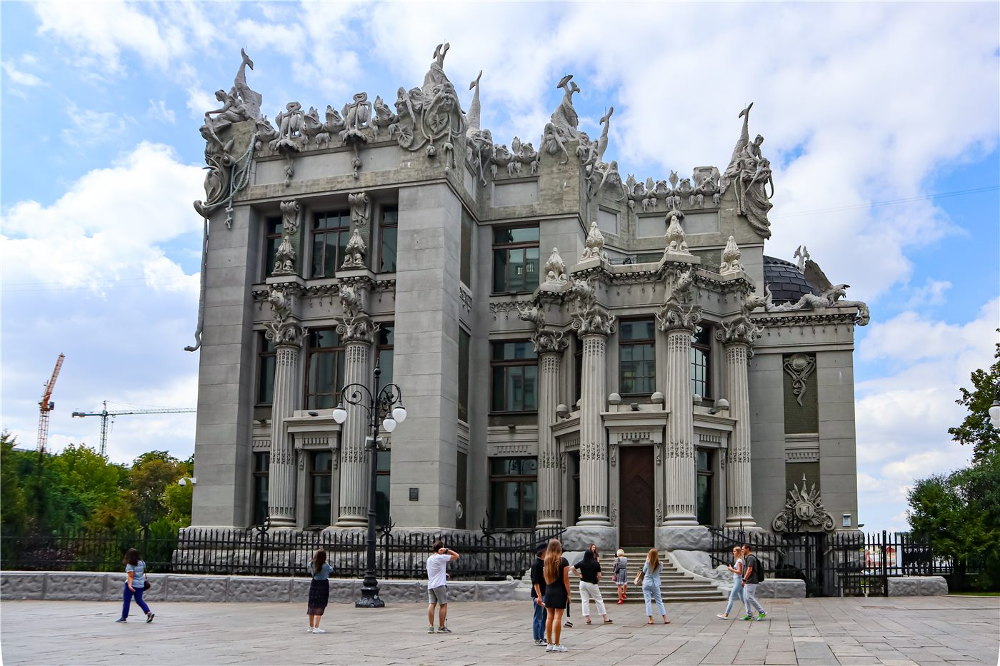

러시아, 우크라이나에 탄도미사일 집중 발사… “민간 목표 공격에 대응”
러시아가 우크라이나 키이우 등을 향해 탄도미사일을 집중적으로 발사했다. 러시아는 우크라이나군의 민간 목표 공격에 대한 대응이라고 주장했다.
손승종 기자 · 2026.07.23
橋국제

러시아가 키이우를 향해 탄도미사일을 밀집 발사했다고 환구망이 전했다. 러시아는 이번 발사가 우크라이나군의 자국 민간 목표 공격에 대한 대응이라는 입장을 밝혔으나, 양측 주장은 엇갈린다.
광고 문의 · 300×250장기화된 전쟁에서 도시를 겨냥한 미사일·드론 공격은 민간 피해와 에너지·주거 인프라 파괴로 이어진다. 겨울철 난방과 전력 공급에 미치는 영향도 우려된다.
국제사회는 인도적 피해를 줄이기 위한 휴전과 협상을 촉구해 왔으나, 전선의 교착과 상호 불신 속에 돌파구 마련은 쉽지 않은 상황이다.
華橋時報는 전쟁 당사국 어느 편의 주장도 그대로 단정하지 않고, 상충하는 설명을 나란히 전한다. 확인되지 않은 전과나 피해 규모는 신중히 다루되, 민간의 안전과 인도적 원칙의 중요성은 분명히 짚는다.
출처·참고 (사실 확인용 — 본문은 직접 재작성)
· 環球網
· 環球網